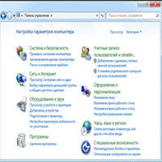

Практическая работа № 8
Создание интерактивной игры «Найди 10 отличий» в программе PowerPoint
ХОД РАБОТЫ
Создаем новую презентацию. На первом слайде пишем название нашей игры «Найди 10 отличий». Для этого в разделе «Вставка» выбираем команду WordArt...
Практическая работа № 9

Изучить интерфейс MS Excel. Освоить основные приемы создания рабочей книги, научиться осуществлять ввод данных в ячейки, редактировать данные.
ЗАДАНИЯ
1. Выделите ячейку D8 и, начиная с нее, введите в шесть ячеек по вертикали фамилии учащихся по образцу, фиксируя ввод данных клавишей Down.
2. Переместите курсор снова в ячейку D8, перейдите в режим редактирования и исправьте в начале фамилий строчные буквы на прописные.
3. Добавьте в ячейки с фамилиями также имена учащихся.
Практическая работа № 10

Освоение технологии создания таблиц, научиться выполнять расчеты в MS Excel
ЗАДАНИЯ
1. Создать ЭТ, в которой нужно подсчитать результат сложения 4-х чисел (столбец f).
2. Создать ЭТ, в которой нужно подсчитать результат умножения 3-х чисел (столбец f)
3. Создать ЭТ, в которой нужно подсчитать результат вычитания 4-х чисел (столбец f)
Практическая работа № 11

Изучение информационной технологии организации расчетов с относительной и абсолютной адресацией данных в таблицах MS Excel
ЗАДАНИЯ
Задание 1. В электронных таблицах с использованием в формулах смешанных ссылок создать таблицу умножения:
1. Заполните название таблицы, строку и столбец с множителями:
2. В ячейку В3 запишите формулу =A3*В2 растяните ее в право и сразу, не снимая выделения, вниз:...
Практическая работа № 12

Освоение технологии создания таблиц, построения графиков и диаграмм по данным таблицам
ЗАДАНИЯ
1. Откройте программу MS Excel.
2. На листе 1 постройте график функции y=x2-10x+15 на интервале [-5,5] с шагом 1.
Для этого:
a. Создайте таблицу по образцу (см. справа). Для заполнения значений X используйте автозаполнение.
b. Для создания значений функции заполните столбец B. Для этого ячейке B2 введите формулу =A2^2-10*A2+15 и скопируйте эту формулу на все остальные ячейки этого столбца.
Практическая работа № 13

Научиться создавать таблицы с помощью конструктора (создание макета таблицы с указанными полями, заполнение таблицы, использование мастера подстановок, установка поля первичного ключа), сортировать данные таблицы, связывать таблицы
ЗАДАНИЯ
Создать базу данных, состоящую из двух таблиц, в которых бы хранились информация о студентах и их родителях какой – либо группы. Для этого:
1. Откройте приложение MS Access.
2. Выберите пункт Новая база данных.
Практическая работа № 14

Научиться создавать запросы разных типов с помощью мастера и конструктора, добавлять данные в таблицу, используя формы. Научиться выполнять фильтрацию записей в таблице, научиться создавать отчёты с помощью мастера отчётов и «вручную», представляет в удобной для чтения и анализа форме.
ЗАДАНИЯ
Задание 1. Создание запросов.
1. Откройте базу данных ГРУППА, созданную в практической работе № 10.